Advanced Cluster Security for Kubernetes (ACS)
Installation
Central Installation
Install Operator
- Select Advanced Cluster Security for Kubernetes
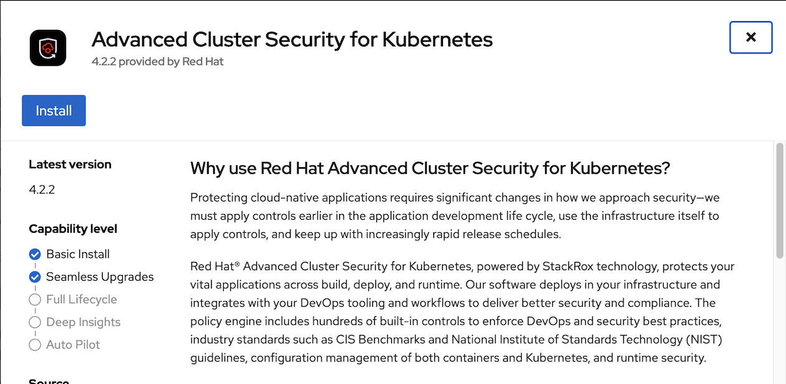
- Accept default parameters
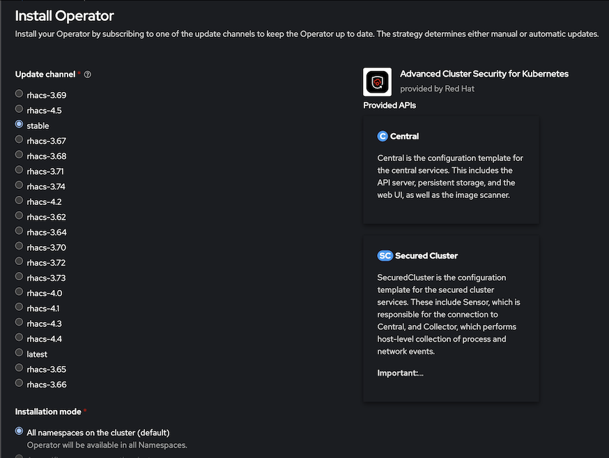
Create namespace for central server and scanner.
oc new-project stackroxInstall roxctl CLI
Download latest binary from here
For OSX
curl -O https://mirror.openshift.com/pub/rhacs/assets/latest/bin/Darwin/roxctl
Create ACS Central with acs-central.yaml
If you want to use custom certificate storedfor central add following section to acs-central.yaml
spec: central: defaultTLSSecret: name: acs-central
Create Central
oc create -f manifests/acs-central.yaml -n stackroxRemark
- Central is configured with memory limit 8 Gi
- Default RWO storage for central is 100 GB
Check status
oc describe central/stackrox-central-services -n stackrox watch oc get pods -n stackroxOutput
NAME READY STATUS RESTARTS AGE central-768b975cb4-pznx2 1/1 Running 0 2m36s scanner-774867b7f5-vnlds 1/1 Running 0 3m17s scanner-db-7784db6d56-7kqvq 1/1 Running 0 3m17sResources consumed by ACS central
CPU
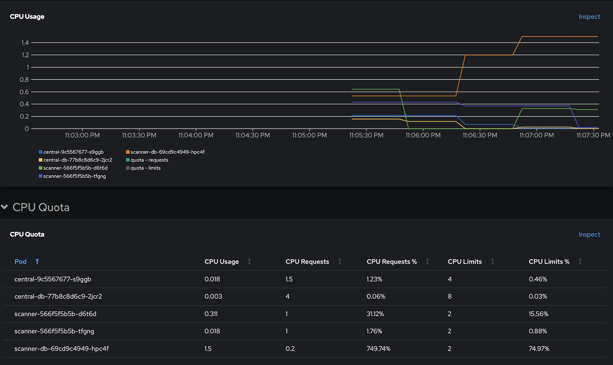
Memory
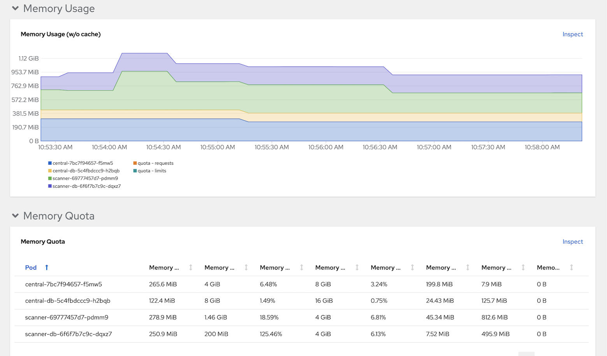
[Optional] Create Central at Infra Nodes
Infra Nodes preparation
Label Infra nodes
oc label node <node> node-role.kubernetes.io/infra="" oc label node <node> node-role.kubernetes.io/acs=""Taint infra nodes with infra-acs
oc adm taint node <node> infra-acs=reserved:NoSchedule
Create Central with acs-central-infra.yaml
oc create -f manifests/acs-central-infra.yaml -n stackrox
Access Central
URL and password to access ACS Console
ROX_URL=https://$(oc get route central -n stackrox -o jsonpath='{.spec.host}') ROX_CENTRAL_ADDRESS=$(oc get route central -n stackrox -o jsonpath='{.spec.host}'):443 ROX_PASSWORD=$(oc get secret central-htpasswd -n stackrox -o jsonpath='{.data.password}'|base64 -d)
Secured Cluster Services (Managed Cluster)
Operator
- Login to ACS console
Generate cluster init bundle
Platform Configuration -> Integrations -> Cluster Init Bundle -> Generate Bundle
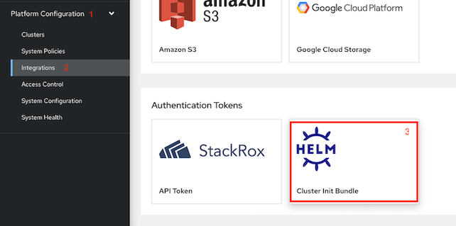
Input cluster name
- download Kubernetes Secrets file for installation with Operator or Helm values file for installation with roxctl
Create namespace for Secured Cluster Services
oc new-project stackrox-clusterCreate secret from previously downloaded Kubernetes Secrets file
oc create -f cluster1-cluster-init-secrets.yaml -n stackrox-clusterInstall Secure Cluster Services on local cluster
Create Secured Cluster Service with acs-secured-cluster.yaml
oc create -f manifests/acs-secured-cluster.yaml -n stackrox-clusterRemark: acs-secured-cluster.yaml is prepared for install Secured Cluster Service within the same cluster with Central.
If you want Admission Control run on Infra Nodes with acs-secured-cluster-infra.yaml
oc create -f manifests/acs-secured-cluster-infra.yaml -n stackrox-clusterCheck status
oc describe securedcluster/cluster1 -n stackrox-cluster watch oc get pods -n stackrox-clusterOutput
NAME READY STATUS RESTARTS AGE admission-control-cb5997c68-4ddp8 1/1 Running 0 28s admission-control-cb5997c68-7vtgh 1/1 Running 0 28s admission-control-cb5997c68-qhbqc 1/1 Running 0 28s collector-59kzw 2/2 Running 0 28s collector-bx2w2 2/2 Running 0 28s collector-kgp57 2/2 Running 0 28s collector-tmscm 2/2 Running 0 28s collector-x9h8n 2/2 Running 0 28sRemark
- Adminission control is high availability with default 3 pods
- Collector is run on all nodes
Resources consumed by admission control and collector
CPU
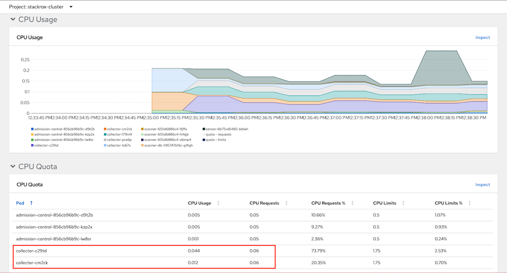
Memory
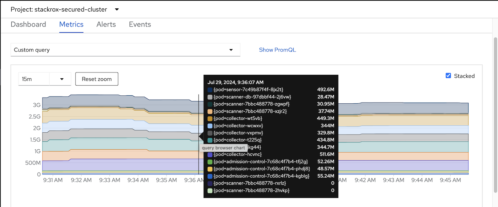
Install Secure Cluster Services on remote cluster
- Generate cluster init bundle
Create secret from previously downloaded Kubernetes Secrets file
oc new-project stackrox-cluster oc create -f cluster2-cluster-init-secrets.yaml -n stackrox-clusterCreate Secured Cluster Service with centralEndpoint set to Central's route.
Get Central's route and save to ROX_HOST environment variable
ROX_HOST=$(oc get route central -n stackrox -o jsonpath='{.spec.host}')Login to remote cluster and run following command.
cat manifests/acs-secured-cluster.yaml | \ sed s/central.stackrox.svc/$ROX_HOST/ | \ sed s/cluster1/cluster2/ | \ oc create -n stackrox-cluster -f -
CLI roxctl and Helm
Create authentication token
Login to Central
echo "ACS Console: https://$(oc get route central -n stackrox -o jsonpath='{.spec.host}')"Platform Configuration -> Integrations -> Authentication Tokens. Select StackRox API Token then generate token and copy token to clipboard
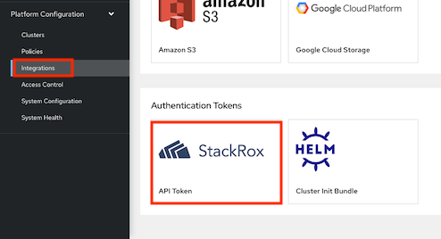
- Token Name: admin
- Role: Admin
Set environment variable
export ROX_API_TOKEN=<api-token> export ROX_CENTRAL_ADDRESS=$(oc get route central -n stackrox -o jsonpath='{.spec.host}'):443Add Helm repository
helm repo add rhacs https://mirror.openshift.com/pub/rhacs/charts/Install Secure Cluster Services on local cluster
Generate cluster init bundle
CLUSTER_NAME=cluster1 roxctl --insecure-skip-tls-verify -e "$ROX_CENTRAL_ADDRESS" central init-bundles generate $CLUSTER_NAME \ --output $CLUSTER_NAME-init-bundle.yamlExample of output
INFO: Successfully generated new init bundle. Name: cluster1 Created at: 2022-05-22T07:43:47.645062387Z Expires at: 2023-05-22T07:44:00Z Created By: admin ID: 84c50c04-de36-450d-a5d6-7a23f1dd563c INFO: The newly generated init bundle has been written to file "cluster1-init-bundle.yaml". INFO: The init bundle needs to be stored securely, since it contains secrets. INFO: It is not possible to retrieve previously generated init bundles.Create collectors
helm install -n stackrox-cluster --create-namespace stackrox-secured-cluster-services rhacs/secured-cluster-services \ -f ${CLUSTER_NAME}-init-bundle.yaml \ --set clusterName=${CLUSTER_NAME} \ --set imagePullSecrets.allowNone=true
Install Secure Cluster Services on Remote cluster
Generate cluster init bundle
CLUSTER_NAME=cluster2 roxctl --insecure-skip-tls-verify -e "$ROX_CENTRAL_ADDRESS" central init-bundles generate $CLUSTER_NAME \ --output $CLUSTER_NAME-init-bundle.yamlCreate collectors
helm install -n stackrox --create-namespace stackrox-secured-cluster-services rhacs/secured-cluster-services \ -f ${CLUSTER_NAME}-init-bundle.yaml \ --set centralEndpoint=${ROX_CENTRAL_ADDRESS} \ --set clusterName=${CLUSTER_NAME} \ --set imagePullSecrets.allowNone=true
Check collector pods
oc get pods -n stackrox -l app=collector,app.kubernetes.io/name=stackroxOutput
NAME READY STATUS RESTARTS AGE collector-5hmzt 2/2 Running 0 87s collector-dmpps 2/2 Running 0 87s collector-ffpdg 2/2 Running 0 87s collector-rfkq2 2/2 Running 0 87s collector-x4gtb 2/2 Running 0 87s
View Managed Cluster
Check ACS Console
Dashboard
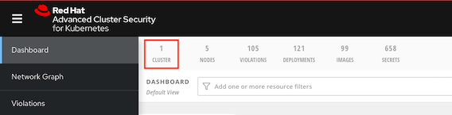
Platform Configuration -> Clusters
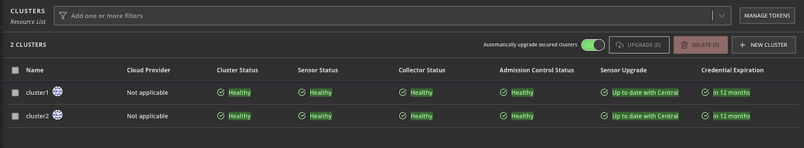
Overall status

Dynamic configuration

Helm-managed cluster

Single Sign-On with OpenShift
Navigate to Platform Configuration -> Access Control then click Add Auth Provider and select OpenShift Auth
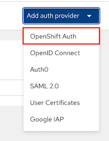
Input configuration then click save
- Name: OpenShift
- Minium access role: Analyst
Rules: mapped spcific user to Admin role
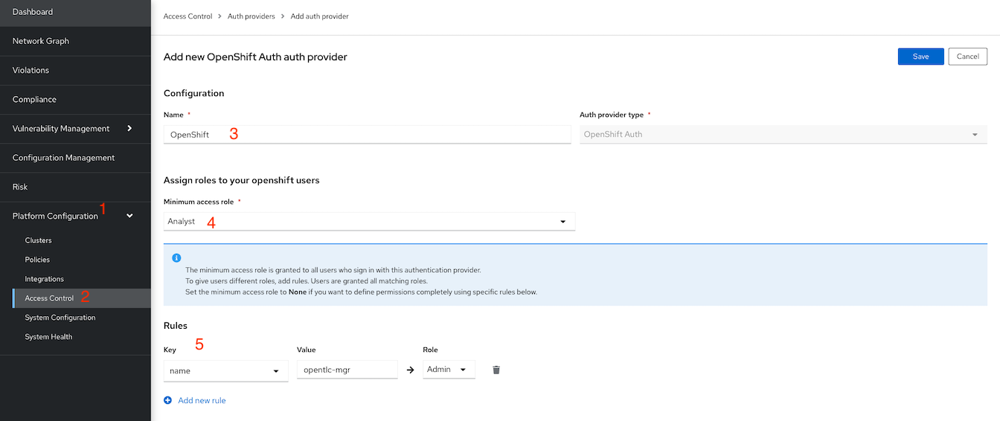
Login with OpenShift

Integration with Nexus
Setup Nexus
Create namespace
oc new-project ci-cdCreate nexus
cd bin ./setup_nexus.shExample of output
expose port 5000 for container registry service/nexus-registry exposed route.route.openshift.io/nexus-registry created NEXUS URL = nexus-ci-cd.apps.cluster-**tlc.com NEXUS User admin: ***** NEXUS User jenkins: ********** Nexus password is stored at nexus_password.txtLogin to nexus with user admin and initial password and set new admin password.
- Browse repository
Copy sample container images to nexus
NEXUS=$(oc get route nexus-registry -n ci-cd -o jsonpath='{.spec.host}') allImages=(backend:v1 backend:11-ubuntu backend:CVE-2020-36518 frontend-js:v1 frontend-js:node frontend-js:CVE-2020-28471 log4shell:latest backend-native:v1 backend-native:distroless) for image in $allImages do echo "############## Copy $image ##############" podman run docker://quay.io/skopeo/stable:latest \ copy --src-tls-verify=true \ --dest-tls-verify=false \ --src-no-creds \ --dest-username admin \ --dest-password $NEXUS_PASSWORD \ docker://quay.io/voravitl/$image \ docker://$NEXUS/$image echo "##########################################" doneCheck Nexus docker repository
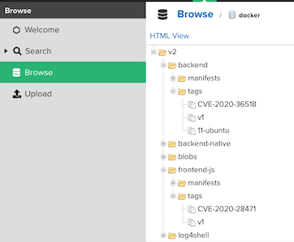
Config ACS
- Login to ACS Central
Platform Configuration -> Integrations -> Sonatype Nexus -> New Integration
Check for Nexus Container Registry address
echo "Endpoint: $(oc get route nexus-registry -n ci-cd -o jsonpath='{.spec.host}')"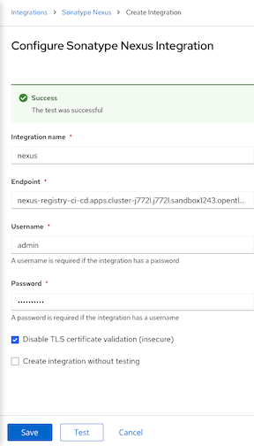
- Input User, Password and Nexus Registry address then click Test and Save
Demo
Container Image with Vulnerabilities
Deploy sample application
oc new-project test oc run log4shell --labels=app=log4shell --image=$(oc get route nexus-registry -n ci-cd -o jsonpath='{.spec.host}')/log4shell:latest -n test oc run backend --labels=app=CVE-2020-36518 --image=$(oc get route nexus-registry -n ci-cd -o jsonpath='{.spec.host}')/backend:CVE-2020-36518 -n test watch oc get pods -n testCheck ACS Dashboard.
1 Criticals violation will be found.
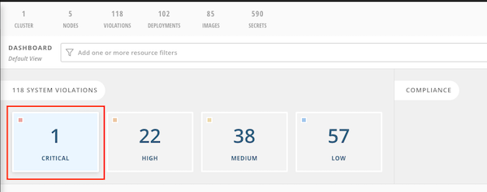
Drill down for more information

CVE Information

CVSS score: https://nvd.nist.gov/vuln-metrics/cvss
- Search by CVE. Vulnerability Management -> Dashboard -> IMAGES -> Search for CVE-2021-44228
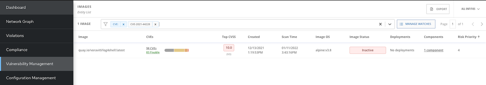
Details information
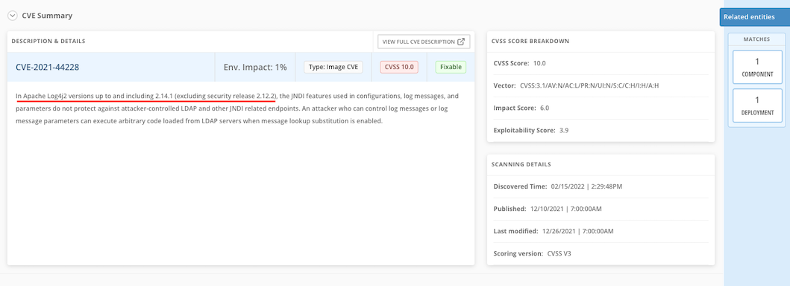
Naviate to Violations, You will find Fixable at least important that is alert for deployment with fixable vulnerbilities on backend deployment
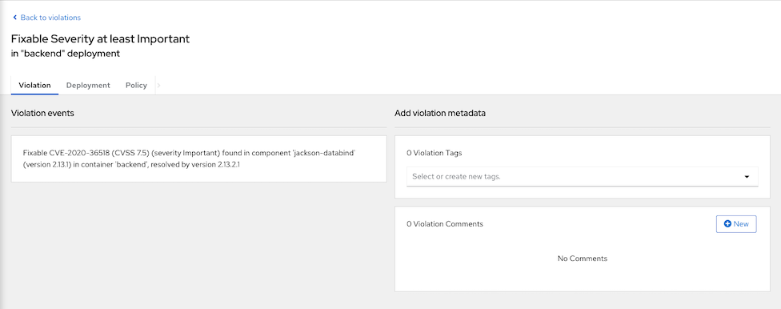
Affected deployment

Drilled down to integrated nexus

Shift Left Security
kube-linter
Try kube-linter with deployment YAML
kube-linter lint manifests/backend-bad-example.yamlDownload kube-linter from this link
Sample recommendation
manifests/backend-bad-example.yaml: (object: <no namespace>/backend-v2 apps/v1, Kind=Deployment) container "backend" is not set to runAsNonRoot (check: run-as-non-root, remediation: Set runAsUser to a non-zero number and runAsNonRoot to true in your pod or container securityContext. Refer to https://kubernetes.io/docs/tasks/configure-pod-container/security-context/ for details.) manifests/backend-bad-example.yaml: (object: <no namespace>/backend-v2 apps/v1, Kind=Deployment) container "backend" has cpu request 0 (check: unset-cpu-requirements, remediation: Set CPU requests and limits for your container based on its requirements. Refer to https://kubernetes.io/docs/concepts/configuration/manage-resources-containers/#requests-and-limits for details.)Try kube-linter with backend-v1.yaml
kube-linter lint manifests/backend-v1.yamlOutput
manifests/backend.yaml: (object: <no namespace>/backend-v1 apps/v1, Kind=Deployment) container "backend" does not have a read-only root file system (check: no-read-only-root-fs, remediation: Set readOnlyRootFilesystem to true in the container securityContext.)Container "backend" still does not have a read-only root file system because Vert.X still need to write /tmp then try backend deployment with emptyDir
Try agin with backend-v1-emptyDir.yaml which set readOnlyRootFilesystem to true
kube-linter lint manifests/backend-v1-emptyDir.yamlOutput
KubeLinter 0.3.0 No lint errors found!
Scan and check image with roxctl
Create token for DevOps tools
- Navigate to Platform Configuration -> Integrations -> Authentication Token -> API Token
- Click Generate Token
- Input token name and select role Continuous Integration
- Copy and save token.
Set API token to environment variable
export ROX_API_TOKEN=<token> ROX_CENTRAL_ADDRESS=$(oc get route central -n stackrox -o jsonpath='{.spec.host}'):443Scan image to check for vulnerbilities
roxctl --insecure-skip-tls-verify -e "$ROX_CENTRAL_ADDRESS" image scan --image $(oc get -n ci-cd route nexus-registry -o jsonpath='{.spec.host}')/backend:v1 --output=table roxctl --insecure-skip-tls-verify -e "$ROX_CENTRAL_ADDRESS" image scan --image $(oc get -n ci-cd route nexus-registry -o jsonpath='{.spec.host}')/backend:CVE-2020-36518 --output=json| jq '.result.summary.CRITICAL'Scan all images in Nexus registry
ROX_CENTRAL_ADDRESS=$(oc get route central -n stackrox -o jsonpath='{.spec.host}'):443 allImages=(backend:v1 backend:11-ubuntu backend:CVE-2020-36518 frontend-js:v1 frontend-js:node frontend-js:CVE-2020-28471 log4shell:latest backend-native:v1 backend-native:distroless) for image in $allImages do roxctl --insecure-skip-tls-verify -e "$ROX_CENTRAL_ADDRESS" image scan --image $(oc get -n ci-cd route nexus-registry -o jsonpath='{.spec.host}')/$image --output=table doneResources comsumed by ACS Central

Check images in image registry
Stackrox can check for vulnerbilities in libraries used by Java applicaion. Check for image backend:CVE-2020-36518
roxctl --insecure-skip-tls-verify \ -e "$ROX_CENTRAL_ADDRESS" image check \ --image $(oc get -n ci-cd route nexus-registry -o jsonpath='{.spec.host}')/backend:CVE-2020-36518 \ --output=tableOutput
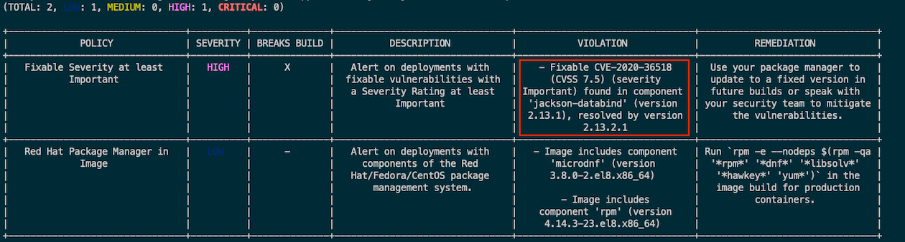
Remark: Column *BREAKS BUILD* indicate that this violation will be stop build process or not
Image backend:v1
roxctl --insecure-skip-tls-verify \ -e "$ROX_CENTRAL_ADDRESS" image check \ --image $(oc get -n ci-cd route nexus-registry -o jsonpath='{.spec.host}')/backend:v1 \ --output=tableOutput

Deployment check
roxctl --insecure-skip-tls-verify -e "$ROX_CENTRAL_ADDRESS" deployment check --file=manifests/backend-bad-example.yaml
Remark: BREAKS DEPLOY column indicate that deployment will be blocked by ACS or not
Jenkins
Setup Jenkins and SonarQube
cd bin ./setup_cicd_projects.sh ./setup_jenkins.sh ./setup_sonar.shRemark: This demo need Nexus
CLI: roxctl
Create buildConfig with Jenkins.
Change following build configuration in backend-build-pipeline.yaml
Set NEXUS_REGISTRY to Nexus Registry address
oc get route nexus-registry -n ci-cd -o jsonpath='{.spec.host}'Set STACKROX to true
- Set MAX_CRITICAL_CVES to 0
- Create pipelines
oc create -f manifests/backend-build-pipeline.yaml -n ci-cd oc create -f manifests/backend-build-stackrox-pipeline.yaml -n ci-cd
Create secret name stackrox-token in namespace ci-cd with Stackrox API token
echo "...Token.." > token oc create secret generic stackrox-token -n ci-cd --from-file=token rm -f tokenLogin to Jenkins
echo "Jenkins URL: https://$(oc get route jenkins -n ci-cd -o jsonpath='{.spec.host}')"Start backend-build-pipeline. Pipeline will be failed because there is 1 CRITICAL CVEs
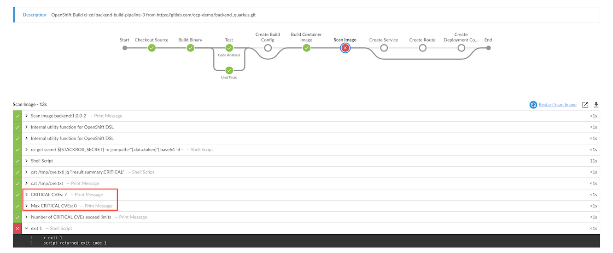
Change MAX_CRITICAL_CVE environment variable to 10 and re-run pipeline again
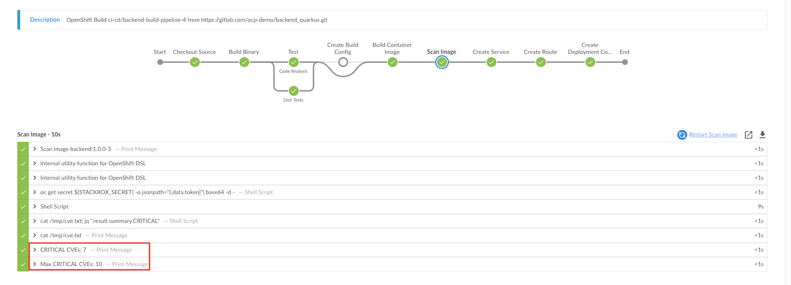
Remark: Jenkinsfile for backend-build-pipeline
Stackrox Jenkins Plugin
Install Stackrox plugin and restart Jenkins
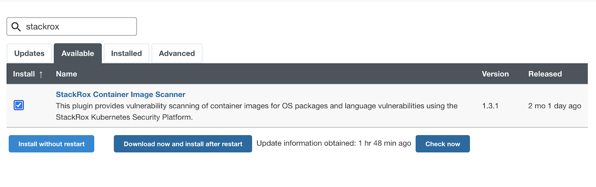
Edit NEXUS_REGISTRY and create pipeline backend-build-stackrox-pipeline.yaml
oc apply -f manifests/backend-build-stackrox-pipeline.yaml -n ci-cdStart backend-build-stackrox-pipeline. Pipeline will failed because image contains CVEs and violate ACS policies

Detailed report in Jenkins
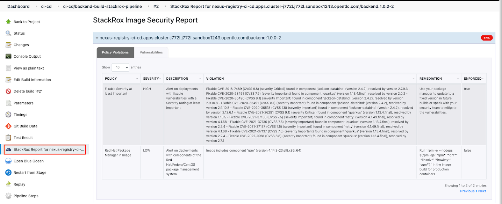
Remark: Jenkinsfile for backend-build-stackrox-pipeline
Enforce Policy on Build Stage
Login to ACS Console, Select Menu Platform -> Configuration, type policy in search bar then input curl

Select policy Curl in image and edit policy
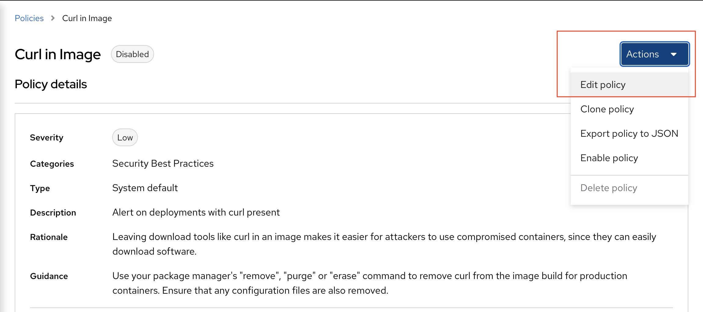
Select policy behavior
- select inform and enforce
enable on build

Enable policy curl in image

Re-run Jenkins pipeline backend-build-stackrox-pipeline and check for report
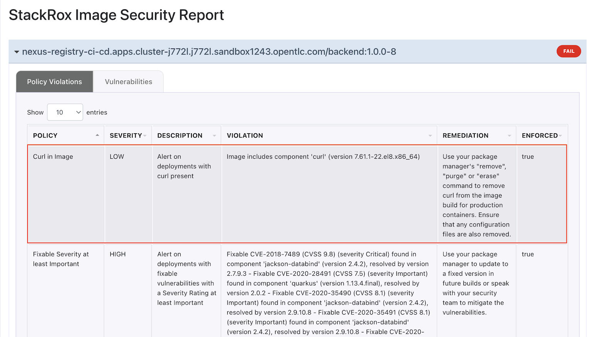
Detecting suspect behaviors
Exec into Pod
- Platform configuration -> Policies
- Search for Policy Kubernetes Actions: Exec into Pod
- Click Action -> Edit Policy
Click Next to Policy Behavior and enable Enforce on runtime. This will make ACS kill the offend pod that try to run exec.

Save Policy
Run curl inside backend's pod
oc new-project project1 oc apply -f manifests/backend-v1.yaml -n project1 oc exec -n project1 $(oc get pods -n project1 -l app=backend --no-headers | head -n 1 | awk '{print $1}') -- curl -s http://backend:8080Output
command terminated with exit code 6Check Console
Navigate to Dashboard -> Violation
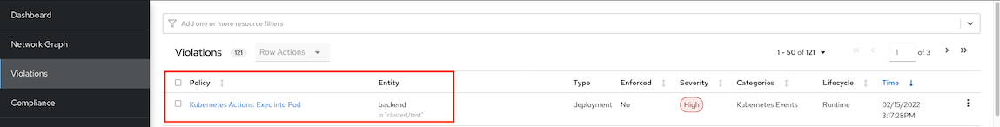
Details information